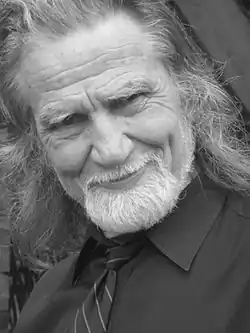

Народився 9 січня 1945 року у криївці поблизу села Любша Рогатинського району Івано-Франківської області. Родина була велика, окрім Любомира у батьків було ще троє дітей.
З 1952 по 1960 роки навчався у Любшанській школі. Батьки хотіли, щоб після закінчення син отримав сан священика, але Любомир вибрав інший шлях і у 1961 році вступив до
Стрийського профтехучилища. Після навчання працював слюсарем на Новороздольскому хімкомбінаті. З 1964 по 1967 роки Любомир служив у лавах Радянської армії. Потрапив на Далекий Схід, був авіамеханіком. Після демобілізації повернувся на Івано-Франківщину. Працював там журналістом у виданнях "Будівник комунізму" та "Радянська Верховина". Займався боксом, був тренером в товаристві "Спартак". З 1979 по 1985 роки навчався на філологічному факультеті Львівського університету, отримав диплом викладача української мови та літератури. Невеликі оповідання Любомира Франківа друкувалися у місцевій періодиці, ще починаючи з 1957 року. Але перша окрема книжка побачила світ лише у 1991 році, це була повість "Тінь чорної троянди", опублікована видавництвом "Каменяр". З 1993 року Франків стає членом Національної спілки письменників України. У 2007 році Любомир Франків переїжджає з України у Литву, де мешкає й досі. Не дивлячись на свій похилий вік, автор веде активну громадську та літературну діяльність.